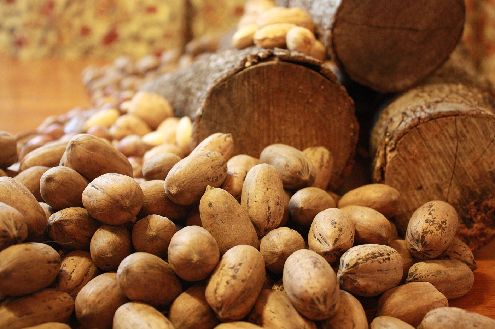

ABOUT
しまい込まれた小屋に、あかりを。
COFFEE KATAOKAは、新潟市西区黒埼地区の住宅街にあるお店です。Instagramのプロフィールによると、「自家焙煎コーヒーとお菓子」の店で、店舗は「元・農機具小屋」を活かしたものとのことです。
農機具をしまう小屋だった場所に、豆を焙煎する香りと焼き菓子の甘さが加わる。そんなイメージで、飾らない素材感と、あたたかなあかりを軸にこのページをまとめました(屋号の意味やオーナー様の想いは確認できておらず、ここでの表現は制作側のイメージです)。
営業時間・定休日・価格は準備中です。

Low-key photograph of light bulb, Straume, Norway julesvernex2 / Jules Verne Times Two / CC BY-SA 4.0(ノルウェー(Straume))
MENU
コーヒーと、お菓子。
詳しい品書きは確認できていないため準備中です。以下は「自家焙煎コーヒーとお菓子」というお店の紹介に合わせたイメージで、実際の商品ではありません。

イメージ
Coffee Beans macro 1 / Daniel Schwen / CC BY 3.0(撮影地不明)自家焙煎のコーヒー
豆の種類・価格は準備中です。

イメージ
Mocha Cake - Djanogly Café, Tate Britain 2026-03-24 / Andy Li / CC0 1.0(イギリス・ロンドン(座標51.491,-0.127))お菓子
種類・価格は準備中です。

イメージ
Coffee cup and saucer / Navaneeth Krishnan S / CC BY-SA 4.0(撮影地不明)一杯のコーヒー
提供方法は準備中です。

Gray espresso cup with amaretto / Friedrich Haag / CC BY-SA 4.0(ドイツ(Commonsカテゴリ記載による))

Pecans, hazelnuts, walnuts, almonds, Brazil nuts on a table with logs 3 / Baileynorwood / CC0 1.0(撮影地不明)
VOICE イメージ例
こんなお声が届くお店に。
以下は制作側が作成したイメージ例で、実在のお客様の声ではありません。
イメージ例
住宅街の静かな小屋で、ゆっくり一杯いただけました。焙煎の香りが心地よかったです。
イメージ例
コーヒーに合うお菓子があるのがうれしい。散歩のついでにまた寄りたいです。
イメージ例
素朴で落ち着く空間。店主さんの手仕事が感じられる、お気に入りの場所になりそうです。

Porcelain teapot on windowsill (Unsplash) / Nathan Fertig nathanfertig / CC0 1.0(アメリカ合衆国(オハイオ州Orrville))

Sunlight and shadows on white cotton curtain / W.carter / Public domain(スウェーデン(Lysekil自治体))
ACCESS
アクセス
| 店名 | COFFEE KATAOKA |
|---|---|
| 所在地 | 〒950-1115 新潟県新潟市西区鳥原1687-2 |
| 電話 | 準備中 |
| 営業時間 | 準備中 |
| 定休日 | 準備中 |
| @coffee_kataoka |

White Cumulus Clouds against Blue Sky / Lance Vanlewen / CC BY-SA 4.0(撮影地不明)

Light green ceramic bowl 1 / W.carter / CC BY-SA 4.0(スウェーデン・Tuntorp, Brastad(カテゴリ名より))

Espresso Coffee 01 / Jubair1985 / CC0 1.0(撮影地不明)